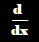

Derivatives
What is a derivative?
A derivative represents the instantaneous rate of change (IROC) of a function. You can find the derivative at a point or of an entire function using many different methods.
Derivatives are very useful in many different circumstances such as physics.
Limit Defenition of a Derivative
The limit defenition of a derivative defines a derivative in a way that will work for any function. Note that limits are used in the equations. The notation for a derivative is f'(x) or d/dx.
f'(x)=lim h-> 0 (f(x+h)-f(x))/h
Derivative rules and Examples
Main Rules
- Power rule
- d/dx x^n = nx^(n-1)
- Product rule
- d/dx f(x)g(x) = f'(x)g(x) + f(x)g'(x)
- Quotient rule
- d/dx f(x)/g(x) = (g(x)f'(x) - f(x)g'(x))/g(x)^2
Additional Rules
- Constant rule
- Trig rules
- Exponential rule
- Logarithmic rule
Examples
- d/dx x^2 = 2x
- d/dx ln(x) = 1/x
- d/dx sin(x)*x^2 = sin(x)*2x + cos(x)*x^2